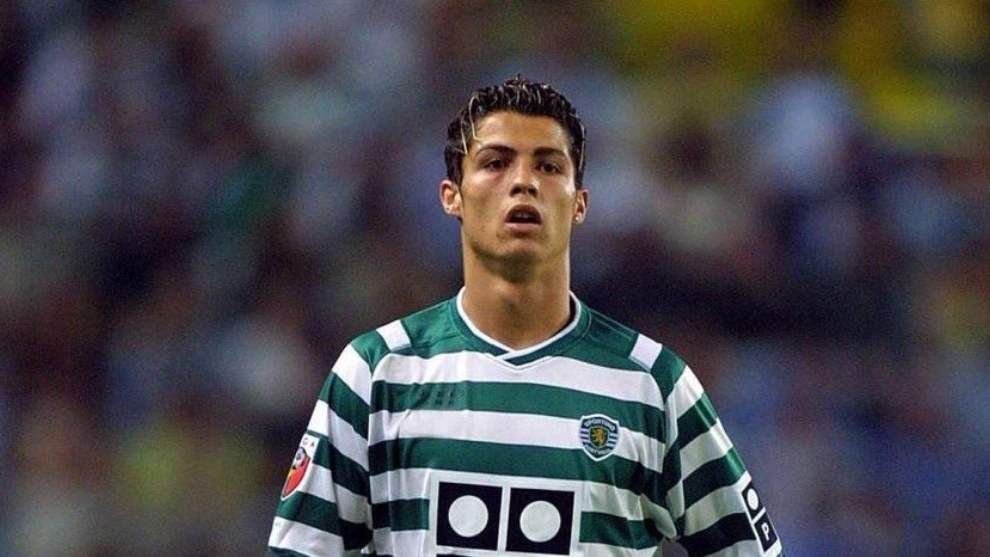

<!DOCTYPE>
<htyml>
<head><title>Ronaldo Biography</title></head>
<body>
<h1 style="background-color:SlateBlue;">Ronaldo as a Child</h1>
<p style="color:DarkBlue;">Ronaldo was born in 5 Febuary 1985,Portugal.He grew up in a poor family with 5 sibling and parents.his father was a worker in a football 
club, but his mother was housewife who take for their children and often work in other people house to get some money to eat.</p>
<table>
<tr>
<td style="width:30%;text-align:canter;">
</td>
<td style="width:30%;text-align:canter;">
</td>
<td style="width:30%;text-align:canter;">
</td>
</tr></table>
<p style="color:Violet;">Usually Ronaldo go to football pitch with his father to play football.After a year his neighbour notised that Ronaldo football skills are 
better and better.In 2002 his stated his career in Sporting Lisbon FC which team is in Portugal,offer him to play for them.</p>
<h1 style="background-color:Gray;">Career</h1>
<p>Than Man United offer him and he won three Primer League,Champion League and FA Cup. He scored more than 150 goals in 6 years.After that,In 2009 Ronaldo singed for
Real Madrid with £80.He scored more than<span style="color:Tomato;font-weight:blod"> 450 </span>goals in Real Madrid.Than,he won<span style="color:blue;font-weight:blod"> 4 </span>Champion League and 4 ballon O'dr. </p>
<table>
<tr>
<td style="width:30%;text-align:canter;">
</td>
<td style="width:30%;text-align:canter;">
</td>
<td style="width:30%;text-align:canter;">
</td>
</tr></table>
<table border="4">
<tr>
<th>Club</th>
<th>Goals</th>
<th>Trophies</th>
<tr/>
<tr>
<td>Manchester United</td>
<td>150</td>
<td>3 main</td><tr/>
<tr>
<td>Real Madrid</td>
<td>450</td>
<td>13 main</td><tr/>
<tr>
<td>Juventus</td>
<td>100</td>
<td>5 main</td><tr/>
</table>
<table><tr>
<td style="width:10%;text-align:canter;">
</td>
<td style="width:10%;text-align:canter;">
</td></table></tr>
<h1 style="background-color:Tomato;">Story With Portugal</h1>
<table><tr>
<td style="width:10%;text-align:canter;">
</td>
<td style="width:10%;text-align:canter;">
</td></table></tr>
<p>Ronaldo made his international debut for Portugal in 2003 at 
the age of 18 and has since earned<span style="color:Tomato;font-weight:blod"> 200 caps </span> , making him both the 
country and history's most-capped player of all time, recognized by the Guinness World Records.
With more than <span style="color:Violet;font-weight:blod"> 125 goals </span> at international level, 
he is also the sports all-time top goalscorer.</p>
<p> If you wantto know more about Cristiano Ronaldo check out the link given <a href="https://en.wikipedia.org/wiki/Cristiano_Ronaldo">
Wikipedia,About Ronaldo</a></p>
<h1 style="background-color:Green;">Ending</h1>
<table><tr>
<td style="width:40%;text-align:canter;">
</td>
<td style="width:40%;text-align:canter;">
</td></table></tr>
</body>
</html>